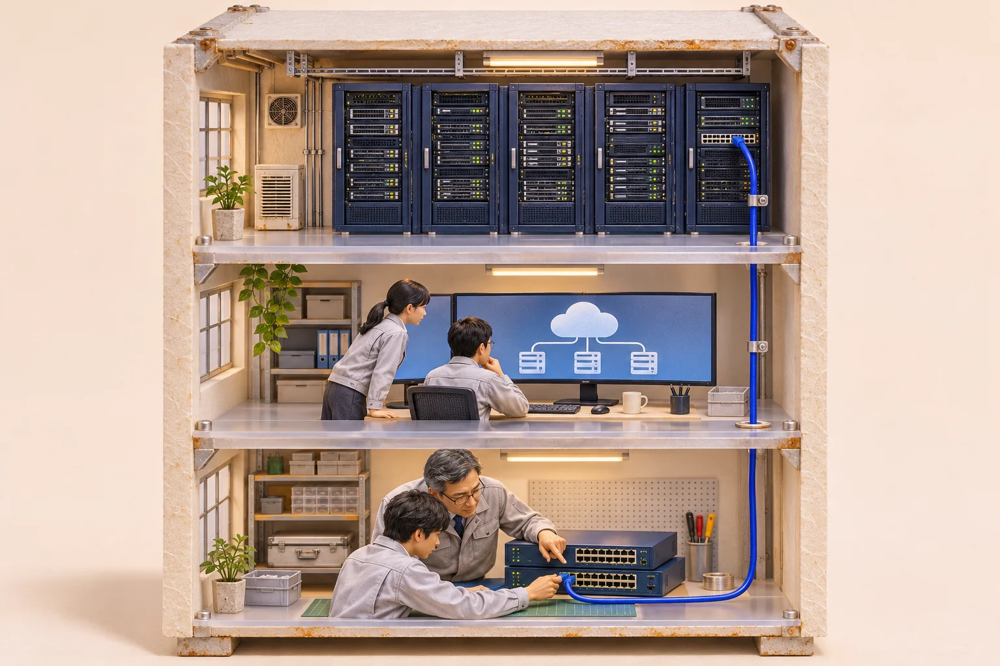

Human provisioning
人を育て、人と人・人と未来をつなぎます

サーバー
システム設計・構築・テスト・導入から、サーバーの運用監視・管理、システムの運用保守までを行います。
サーバーの業務内容を見るネットワーク
ネットワークの設計・構築・テスト・導入、導入支援、運用監視・管理、運用保守を行います。
ネットワークの業務内容を見る実機研修
外部の専門教育機関を活用するほか、社内には実践型研修を可能とした設備を設置しており、ネットワークの未経験者も勉強・経験・知識習得ができます。
教育システムを見るクレイスを知る
取引先実績（一部・順不同）
NTTインフラネット株式会社、日本コムシス株式会社、株式会社日立ソリューションズ